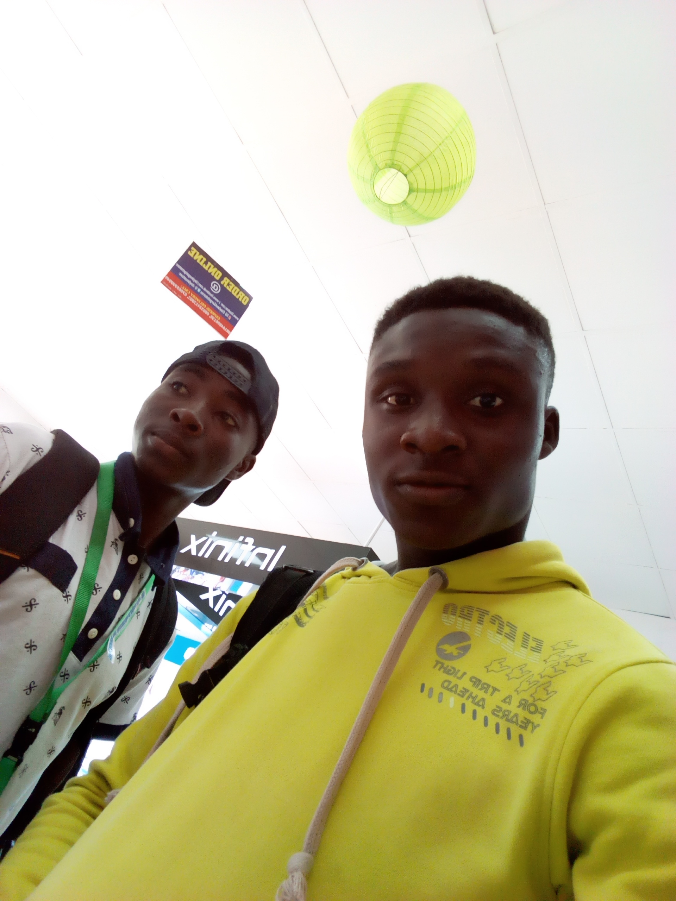

My Achievement
My Names are Owoyemi Illiyas Adeniyi,a direct entry student of library and information science Kwara state university Malete.
It a great opportunity and a great achievement to me this moment, seeing myself designing my first website, to share with the veiwers of my web site of my acheivement so far.
Though life hasn't really been bed of roses, but by the mercy and grace of God, i was able to over come challenges and stand-out among my pears.
My sincere appreciation goes to God Alimighty for preserving my life to this very moment, and to my families for their prayers and care.
My acheievement goes as follows:
I am glad and proud today to say that i have obtained my secondry school certificate with remarkable grades at one sitting.
My greatest achievement so far is that, despite so many challenges concerning my education,
i was able to overcome challenges with the help of God Almighty and the prayers and support of my families to gain adimission into a prestigious world class university.
I am proudly a kwasuite and a proud student of the prestigious department of library and information science.
I have achieved in so many areas, i was able to finish my ijmb successfully and was giving admission into a world class university.
I see it as great achievement, because this is a great opportunity for me to acquire knowledge and make impact in my society and the world at large
© Copyright2019
Back to Homepage
My Self